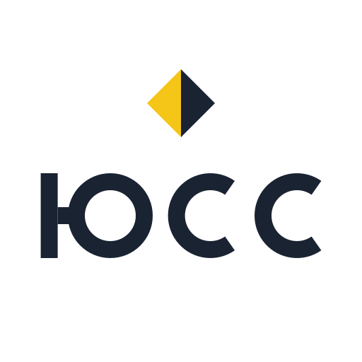
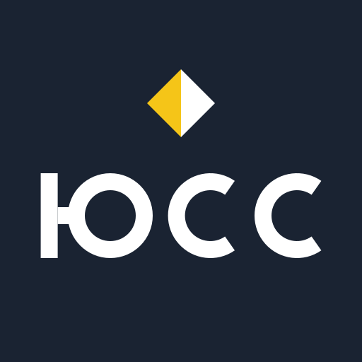
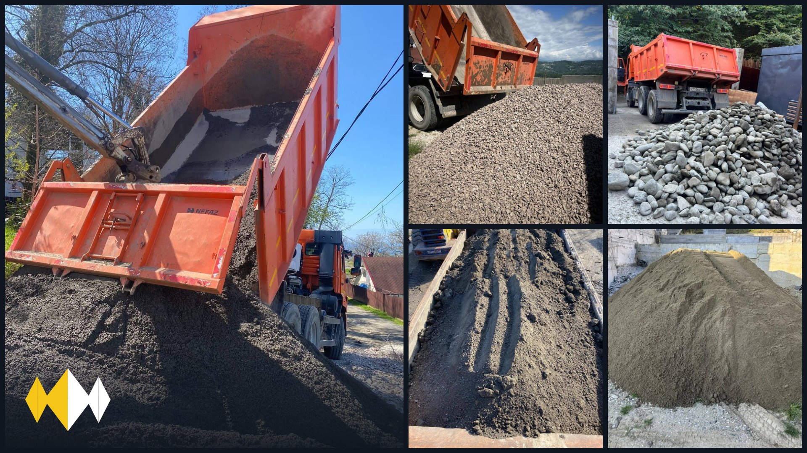
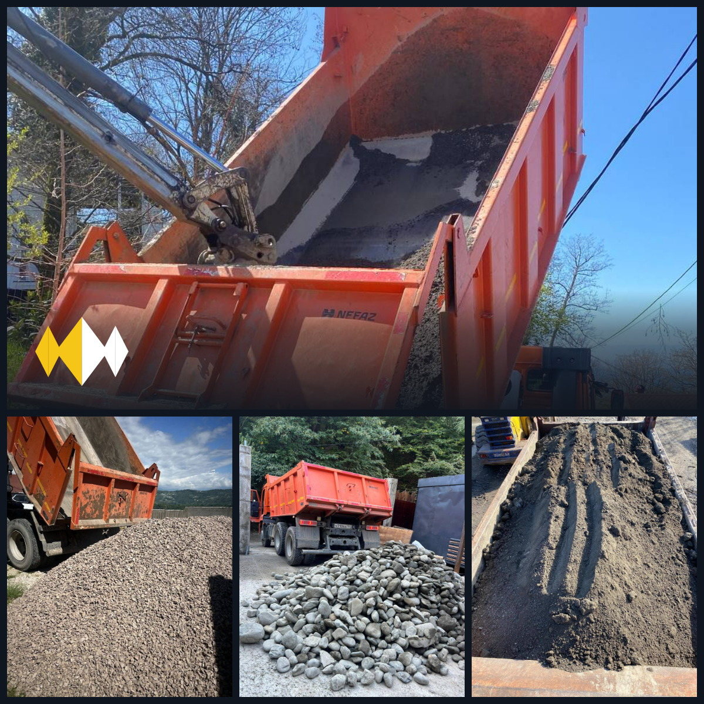
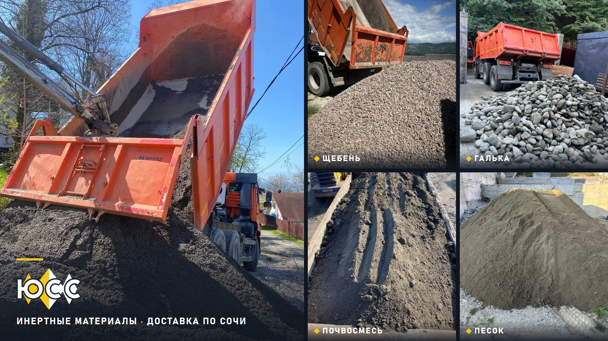
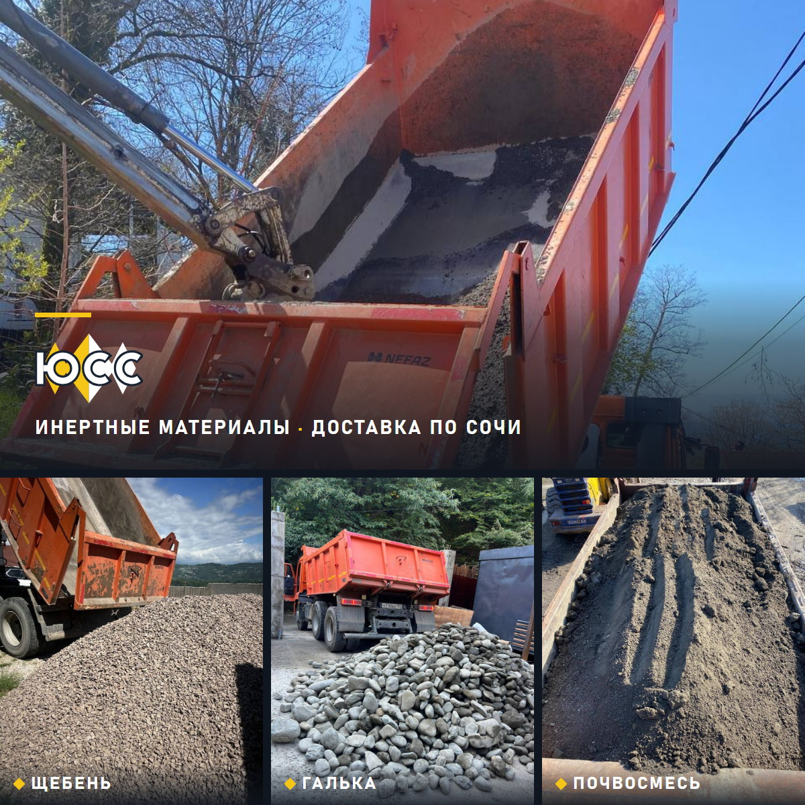
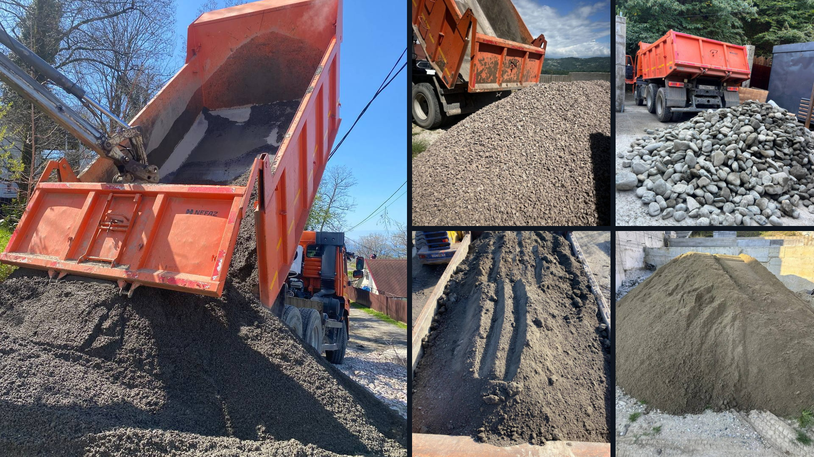

Векторные файлы (SVG) масштабируются без потери качества — хоть на визитку, хоть на борт машины. Буквы вычерчены контурами, а не набраны шрифтом: у типографии или у менеджера ничего не «поплывёт».
logo-uss.svg — на светлом фоне
logo-uss-white.svg — на тёмном фоне и на фото: чёрные половины
ромбов становятся белыми, иначе они сливаются с фоном
logo-uss-diamonds.svg / -white.svg — для мест, где любые
надписи запрещены: модерация 2ГИС считает буквы на фото рекламным текстом


Справа — как знак выглядит мелко в списке организаций. Всё вписано в круг: круглая аватарка ничего не срежет.

2gis-cover-16x9-nowords.jpg — 1920×1080. Ни одной надписи,
знак без букв, окантовка по периметру. Это версия для 2ГИС.

2gis-cover-1x1-nowords.jpg — 1200×1200, квадрат без слов

2gis-cover-16x9.jpg — 1920×1080, с подписями материалов

2gis-cover-1x1.jpg — 1200×1200, квадрат

2gis-cover-clean.jpg — то же без надписей, если модерация придерётся к тексту на фото